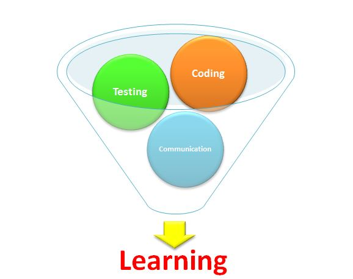
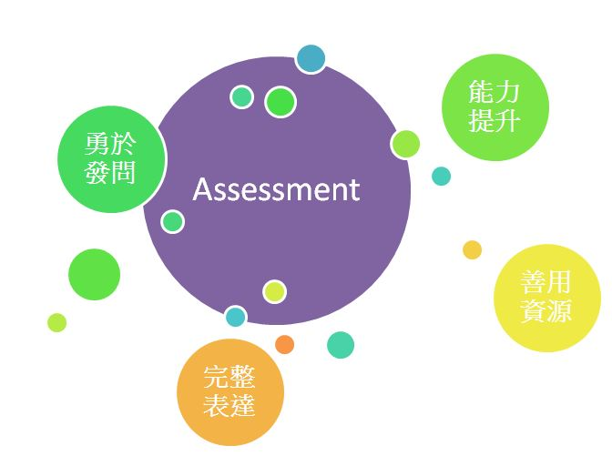
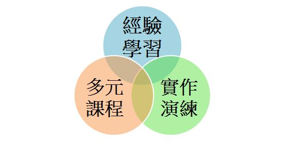

暑期實習跟暑假前的實習感覺很不一樣，主管為了讓我們能更融入整個團隊，鼓勵我們一周上五天班，與整個團隊更深入的合作，讓我更能體會上班族的感覺，漸漸習慣了朝九晚五的生活；在工作時能更加進入狀況，也養成了每天一醒來就計畫今天上班該做些甚麼，需要完成些甚麼、達成甚麼目標等習慣。
一週五天班，可以接觸的東西更多也更廣，除了要與部門的工程師合作溝通、每天早上也固定要和大陸的同事們開會，不只工程師們會加入，主管們也會一同與會；在會議中讓大家都能了解彼此的進度、給予適當協助，主管們也會不吝嗇得給予建議及提出大方向的問題給與會人員思考，並且適時的掌控會議的節奏，讓我體驗到會議的重要。
Daily Meeting
從2月初到現在，也實習了近八個月的時間，從剛開始甚麼都不懂，公司運用的開發環境也跟學校所學得有所差異，所以剛開始進到公司，花了不少時間適應及學習，雖然學得比其他人慢，程式打不出來的時候也很沮喪，但是我一直抱持著努力不懈的心情，要對自己的選擇負責，既然當初決定要進入程式的公司學習，也真的如願以償面試上了，就要好好努力並且有所貢獻回饋公司。
在進入實習階段時，除了程式以外，也要熟悉物流業的相關流程，因為公司是屬於物流集團，在碰觸到許多系統時，都會有一些專有名詞或者流程，了解這些流程有助於在撰寫程式時，能夠更加流暢。
實習中，我學到了很多東西，第一個就是撰寫程式的技巧，在這間公司，有各種不同才能的工程師，有些在資料庫、數據方面很拿手；有些在前端介面的設計上很靈活；也有一些在Domain上比較強，而大家撰寫程式的方式都不一樣，有各自的想法和做法，讓我能夠很多元的學習，在碰到一個問題時，可以有更多的想法來解決。
第二個就是在測試及撰寫文書方面，以前覺得測試是很枯燥乏味的事情，但是接觸後才了解到，其實測試是一個很重要的環節，測試人員要很有耐心也要很細心，如果在測試時，沒辦法測出問題，可能會造成使用者在使用上的困擾，也會影響到使用者對系統的評價，所以在測試時要能夠很全面的測試到所有的流程，確保程式在運行時能夠很流暢，也要很了解系統，運用最快速的時間，完成最完整的測試。
而測試的另一個要領，就是要撰寫Test Case，雖然感覺上只是一個簡單的文件，但是實際上，撰寫Test Case的人，是必須要對系統的操作十分熟悉，如果撰寫Test Case不熟悉系統，就會產生資訊錯誤，也會讓其他人看不懂；而一份好的Test Case會讓所有使用的人，都能一目了然，清楚的理解內容，並依照Test Case做測試。
第三個是溝通、表達的能力，這對我來說這也是一個重要的層面。剛開始實習遇到困難時，我會怕影響其他人工作而不敢問，也不太知道怎麼表達問題，但是主管就經常說:「不會就去問」，這句話不是指碰到問題想都不想就馬上求救，而是當這個問題你已經想了半個小時甚至一個小時、也上網查過都沒辦法解決時，就必須要整理出問題點，在正確的時間發問；有認真思考過，在問問題時，就能很流暢地說出自己的問題點，而在向他人求助時，也能很快地從中理解出解決方法。
了解到自己在coding能力上的不足，只能比別人更努力，多問多聽多學，尤其是在每日的Meeting中，更是需要展現自己的表達能力，與他人報告與自己的工作進度。
經由這幾個月的努力，不論是在coding上的能力、使用各種程式語言、運用網路資源等等都有進步；在工作上遇到困難時，也有別於以往畏畏縮縮的態度，能夠更加勇於發問，並且完整表達出自己的疑問。
很感謝系上為我們接洽這麼多公司，讓我們在選擇實習時，能夠有很多元的選擇，也可以讓大家往自己有興趣的領域發展。從挑選公司寫履歷到面試再來正式進入實習公司實習，到現在換學弟妹們也準備步入實習的階段；我覺得在公司介紹及工作內容方面，可以提供更詳細的資訊，讓大家在選擇的時候能夠更明確的瞭解到將來有可能會面對的工作，除了請各公司主管來介紹以外，也可以提前安排更多在不同公司實習的學長姐和學弟妹分享，我相信如此一來，大家在正式踏入實習階段時，一定會對自己的選擇更加滿意。
在進入公司實習後，接觸了很多不同的程式語言，學習的更廣也更深入，也有很多實際的Case讓我們實作，藉此能快速增加實力，也會在邏輯應用上有更多的發揮。因此，我建議系上在選修課上能提供更多元的程式語言供大家做選擇；不建議作為必修課程是因為每個人的能力不同，興趣也不同，如果是開設選修課，能讓真正有興趣的人自行加選，當然會主動加選的人必定有相當的程度或是濃厚的興趣，因此教授在教學上也能夠較能拿捏學生的程度，授予相對應的課程內容。
而在課程選擇上，也建議多一點實作的課程，可以是日常生活中常見的系統、網站或者讓同學自行發揮自訂主題，讓大家可以真的去實現自己的想像，增加實作經驗，也能在課堂中與同學討論、或是詢問教授，讓大家能夠善用理論並加以活用，如此一來也有益於面臨實習環境甚至未來進入職場時能夠靈活運用所學。
